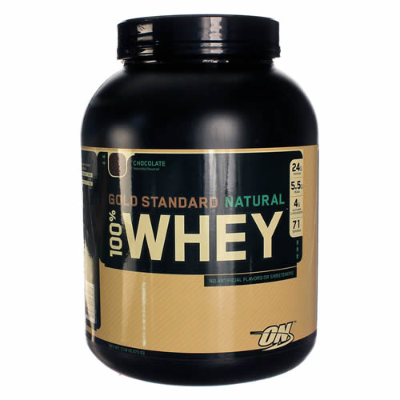

glutamine powder

Información de Glutamine powder :
La glutamina es un aminoácido (un bloque de construcción para las proteínas), que se
encuentra de forma natural en el cuerpo. La glutamina se utiliza para contrarrestar algunos de los efectos
secundarios de los tratamientos médicos. Por ejemplo, se utiliza para los efectos secundarios de la
quimioterapia del cáncer, incluyendo la diarrea, el dolor y la inflamación dentro de la boca (mucositis),
dolor nervioso (neuropatía), y dolores musculares y articulares causados por el medicamento para el cáncer
taxol. La glutamina se utiliza también para proteger el sistema inmunológico y el sistema digestivo en personas
que se someten radioquimioterapia para el cáncer de esófago. Además, la glutamina se utiliza para mejorar la
recuperación después del trasplante de médula ósea o de la cirugía intestinal, aumentando el bienestar de las
personas que han sufrido lesiones traumáticas, y la prevención de infecciones en las personas en estado crítico.
Algunas personas usan la glutamina para las condiciones del sistema digestivo, como úlceras de estómago, colitis
ulcerosa y enfermedad de Crohn. También se utiliza para la depresión, cambios de humor, irritabilidad, ansiedad,
insomnio, y mejorar el rendimiento del ejercicio. Las personas que tienen el VIH (SIDA) a veces usan la glutamina
para prevenir la pérdida de peso (emaciación por VIH).
La glutamina también se utiliza para el trastorno de déficit de atención e hiperactividad (TDAH), un trastorno
urinario llamada cistinuria, anemia de células falciformes, y para el apoyo de abstinencia de alcohol.
Polvo de glutamina puede ser ordenado a través de la mayoría de los proveedores de medicamentos al por mayor. La
glutamina para uso comercial se hace por un proceso de fermentación por bacterias que producen glutamina.
¿Cómo funciona?,
La glutamina es el más abundante de aminoácidos libres en el cuerpo. Los aminoácidos son los bloques constituyentes de
las proteínas. La glutamina es producida en los músculos y se distribuye por la sangre a los órganos que lo necesitan.
La glutamina puede ayudar a la función intestinal, el sistema inmunológico, y otros procesos esenciales en el cuerpo,
especialmente en momentos de estrés. También es importante para proporcionar "combustible" (nitrógeno y de carbono) a
muchas células diferentes en el cuerpo. La glutamina es necesaria para fabricar otras sustancias químicas en el cuerpo,
como otros aminoácidos y glucosa (azúcar).
Después de la cirugía o lesión traumática, el nitrógeno es necesario para reparar las heridas y mantener los órganos
vitales funcionamiento. Alrededor de una tercera parte de este nitrógeno proviene de la glutamina. Si el cuerpo utiliza
más glutamina de los músculos pueden hacer (es decir, en momentos de estrés), se puede producir pérdida de masa muscular.
Esto puede ocurrir en personas con VIH / SIDA. Tomar suplementos de glutamina puede mantener las tiendas de glutamina
para arriba. Algunos tipos de quimioterapia pueden reducir los niveles de glutamina en el cuerpo. Tratamiento glutamina
se cree que ayuda a prevenir el daño relacionada con la quimioterapia por mantener la vida útil de los tejidos afectados.
Los atletas que entrenan para eventos de resistencia (como maratones) pueden reducir la cantidad de
glutamina en el cuerpo. Es común que ellos cogen un resfriado después de un evento deportivo. Algunos expertos piensan
que puede ser debido a la importante función de glutamina en el sistema inmunológico. Por este selecto grupo de atletas,
un estudio mostró que tomar suplementos de glutamina resultaron en un menor número de infecciones. Lo mismo no es cierto,
sin embargo, para los deportistas que entrenan a una intensidad moderada.

Pre Load Creatine
complex

Gold Standar
Natural Whey

{kind=link}
{kind=link}